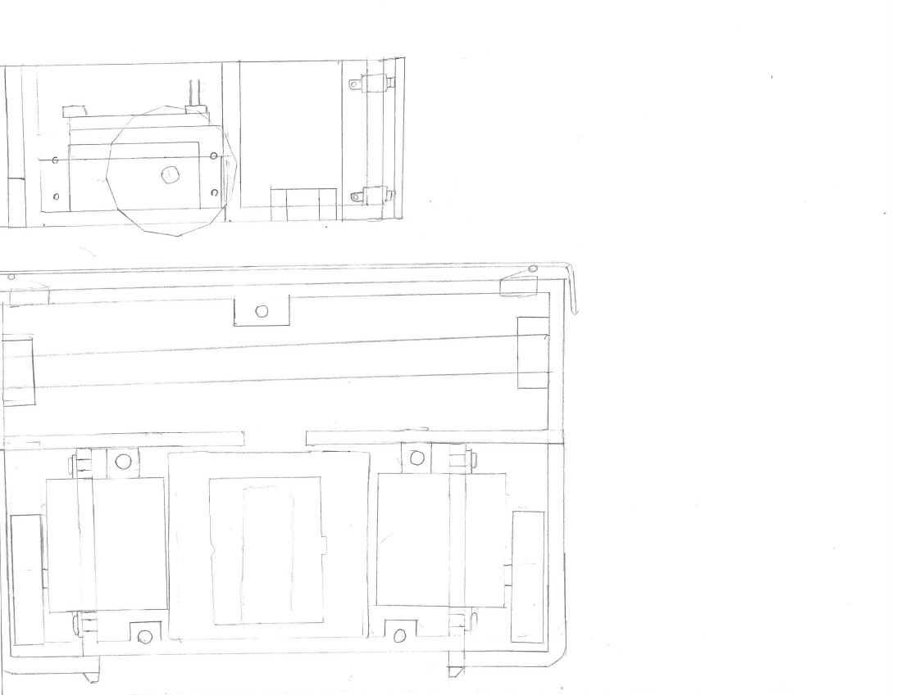

Designs and Sketches
The V.O.R.P Project

V.O.R.P. was the first 3D printed robot that I created. This page chronicles the concept drawings that were drawn prior to the CAD designs. The design was revised many times, and the final product bears almost no resemblance to the first drawings
Click For More Information
Unnamed Project
" class="centerpaper" width="35%">This project was never created, but a concept design was done in CAD. The CAD design was just meant to give an idea of what it might look like.
Click For More Information
RPR
" class="centerpaper" width="35%">RPR, The Rag Pushing Robot, was my attempt at a Rumba like robot.
Click For More Information
Unnamed Project

This was a design of a small mobile robot using the EZ-Robot V3 kit. This design was never built.
Click For More Information
Unnamed Project

These are a couple of concept drawings. They are simply external designs.
Click For More Information